Pour chaque projet : la démarche suivie, les compétences précisément mobilisées et les preuves concrètes de réalisation. Cliquez sur un projet pour le déplier.
Mise en œuvre d'une enquête
Détails
Conception d'un questionnaire pour un CPIE (Centre Permanent d'Initiatives pour l'Environnement), collecte et traitement des réponses, analyse des résultats par tranche d'âge et restitution avec visualisations adaptées.
AnalyserValoriserSondage
Présentation générale
Ce projet consistait à concevoir et mettre en œuvre une enquête pour le compte d'un CPIE (Centre Permanent d'Initiatives pour l'Environnement), qui souhaitait mieux connaître son public et ses non-publics afin d'ajuster sa stratégie de communication et d'animation.
Nous avons été confrontés à des situations concrètes de construction d'un protocole de collecte : définition des objectifs avec le commanditaire, rédaction d'un questionnaire évitant les biais de formulation, diffusion auprès de différentes tranches d'âge, puis collecte des réponses.
Nous avons ensuite mené le traitement statistique des résultats en croisant les réponses avec la variable âge, avant de procéder à une restitution adaptée à un public non technicien, sous forme de graphiques en barres empilées en pourcentage.
Présentation individuelle
Durant ce projet, j'ai pris en charge plusieurs tâches essentielles :
Tâches principales
Participation à la construction du questionnaire, avec le choix d'échelles de Likert à 4 niveaux pour éviter l'effet de neutralité
Traitement statistique des réponses et croisement avec la variable tranche d'âge
Réalisation des graphiques de restitution sous forme de barres empilées en pourcentage
Tâches secondaires
Diffusion du questionnaire et collecte des réponses
Rédaction de ma partie de projet pour le rapport final
Compétence ciblée — Valoriser une production dans un contexte professionnel
Ce projet m'a permis de développer mes compétences en construction et restitution d'une enquête auprès d'un commanditaire associatif.
J'ai appris à identifier les biais liés à la formulation des questions et au choix des échelles de réponse.
Contextualiser des données issues d'une collecte par questionnaire avant de les analyser.
Choisir une forme de restitution adaptée à un public non spécialiste de la statistique.
Mettre en évidence des résultats clés à l'aide d'indicateurs pertinents (taux de connaissance par tranche d'âge).
Cette expérience m'a également permis d'approfondir mes connaissances sur les spécificités de la donnée d'enquête et la différence entre la question posée et la variable analysée.
Apprentissage et bénéfices
Suite à ce projet, j'ai renforcé mes compétences dans :
La construction d'un protocole de collecte fiable, par une formulation de questions non biaisées.
La vulgarisation de résultats statistiques pour un public non technicien.
L'explicitation de la démarche suivie lors de la restitution des résultats.
Apprentissage critique associé :
AC13.01 : Prendre connaissance des biais rencontrés dans la mise en place d'une enquête
AC13.02 : Identifier l'importance de contextualiser ses données
AC13.04 : Lors de la restitution des résultats, mesurer l'importance d'expliciter également la démarche suivie
AC13.05 : Comprendre les intérêts de la data visualisation et de l'infographie
AC13.06 : Mesurer l'importance d'une expression précise et nuancée dans la communication des résultats
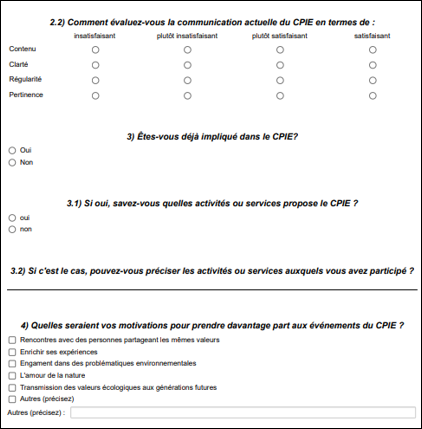
Extrait du questionnaire — échelles de satisfaction et motivations
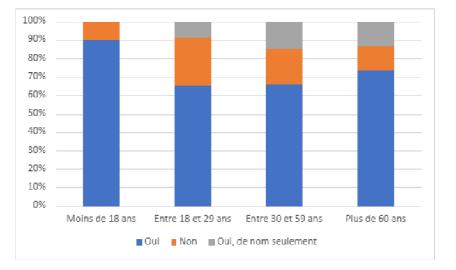
Connaissance du CPIE par tranche d'âge — résultats de l'enquête
Conception et implémentation d'une base de données
Détails
Projet Compudistri : conception du dictionnaire des données, modélisation du schéma relationnel sous Looping et IBeasy+, import sur Access, rédaction de 42 requêtes SQL pour interroger les articles, clients, fournisseurs et factures.
TraiterSQLAccessModélisation BDD
Présentation générale
Ce projet consistait à créer une base de données relationnelle pour une entreprise fictive de distribution de composants informatiques, Compudistri, qui souhaitait informatiser la gestion de ses articles, clients, fournisseurs et factures.
Par équipe de 4, nous avons été confrontés à des situations concrètes de mise en place d'une base de données répondant aux besoins de l'organisation.
Nous avons suivi différentes étapes afin de construire une base de données, avec une réflexion sur la modélisation des données en vue de leur utilisation, l'implémentation de la base de données, ainsi que son alimentation.
En effet, nous avons eu une réflexion afin de pouvoir créer un dictionnaire de données suivant différentes règles que l'on a respectées. Par la suite, nous avons effectué des productions de schémas relationnels afin de visualiser de façon claire la répartition des données. En outre, nous avons implanté les données dans un logiciel spécifique afin d'obtenir une réalisation claire répondant à notre problématique.
Présentation individuelle
Durant ce projet, j'ai pris en charge plusieurs tâches essentielles :
Tâches principales
Réalisation du dictionnaire des données du cas d'étude
Prise en main du logiciel IBeasy+, sur lequel j'ai réalisé le schéma relationnel en tenant compte des règles métier et des cardinalités
Fusion des schémas relationnels issus des deux binômes (Looping et IBeasy+) avec mon binôme
Import des données dans le logiciel Access
Tâches secondaires
Relecture des 42 requêtes SQL rédigées par le binôme Looping
Rédaction de ma partie de projet pour le rapport final
Compétence ciblée — Traiter des données structurées
Ce projet m'a permis de développer mes compétences en conception et gestion de bases de données relationnelles.
J'ai appris à analyser les besoins d'un commanditaire pour proposer une modélisation adaptée et structurée.
Construire un dictionnaire de données en respectant les règles métiers et de gestion.
Implémenter une base de données dans un logiciel dédié en définissant ses clés primaires et étrangères ainsi que les relations entre les tables.
Adapter un modèle conceptuel des données en fonction des contraintes techniques et métiers.
Cette expérience m'a également permis d'approfondir mes connaissances sur les formalismes de notation et la syntaxe des langages de bases de données (SQL).
Apprentissage et bénéfices
Suite à ce projet, j'ai renforcé mes compétences dans :
L'analyse des besoins et la traduction de ceux-ci en un modèle de données exploitable.
L'optimisation de l'exploitation des données en assurant leur cohérence et leur intégrité.
L'importance de la programmation pour automatiser la gestion et le traitement des données.
Apprentissage critique associé :
AC1 : Correctement interpréter et prendre en compte le besoin du commanditaire ou du client
AC2 : Respecter les formalismes de notation
AC3 : Connaître la syntaxe des langages et savoir l'utiliser
AC4 : Mesurer l'importance de maîtriser la structure des données à exploiter
AC5 : Comprendre les structures algorithmiques de base et leur contexte d'usage
AC6 : Prendre conscience de l'intérêt de la programmation
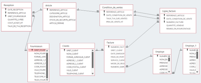
Schéma relationnel final sous Access — entités Réception, Article, Facture, Clients, Fournisseurs, Employé
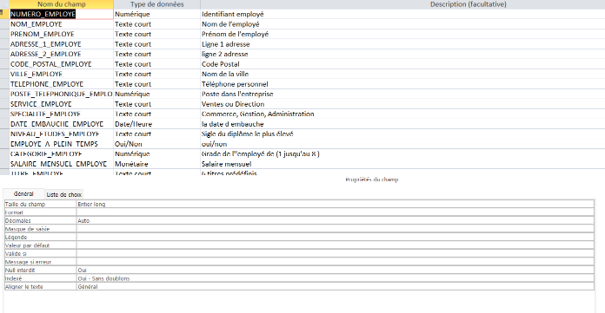
Dictionnaire des données — table Employé, types et descriptions des champs
Régression sur données réelles
Détails
Étude statistique de l'insertion professionnelle des diplômés de Master : relation entre la part d'emplois stables par discipline et le salaire brut annuel estimé, avec construction d'intervalles de confiance.
ModéliserAnalyserTechniques de sondage
Présentation générale
Pour ce projet, il nous était demandé de choisir un sujet d'étude à partir d'un jeu de données réelles, afin de mettre en évidence un lien entre deux variables quantitatives par une démarche de régression. Notre groupe a choisi d'étudier l'insertion professionnelle des diplômés de Master en France, en s'intéressant à la relation entre la part d'emplois stables obtenus par discipline et le salaire brut annuel estimé.
Nous avons été confrontés à des situations concrètes de préparation et d'exploration de données réelles, avec une réflexion sur le choix des représentations graphiques et numériques permettant de décrire une variable puis de mettre en évidence une liaison entre deux variables.
Nous avons ensuite mené une démarche de comparaison d'ajustements (linéaire, lissage local, polynomial) afin de retenir le modèle le plus pertinent, en intégrant la variabilité d'échantillonnage par la construction d'intervalles de confiance.
Présentation individuelle
Durant ce projet, j'ai pris en charge plusieurs tâches essentielles :
Tâches principales
Étude de la distribution de la part d'emplois stables par discipline (histogramme)
Mise en relation graphique entre salaire et emploi stable, avec ajustement d'une droite de régression comparée à un lissage local
Ajustement d'un modèle polynomial de degré 2 et analyse du nuage de résidus
Tâches secondaires
Construction des intervalles de confiance sur les estimateurs
Rédaction de ma partie de projet pour le rapport final
Compétence ciblée — Analyser statistiquement les données
Ce projet m'a permis de développer mes compétences en analyse statistique sur données réelles.
J'ai appris à décrire une distribution avant modélisation, en repérant une éventuelle asymétrie plutôt que d'appliquer un modèle linéaire par défaut.
Comparer un ajustement linéaire à un ajustement local pour juger de la pertinence d'un modèle plus complexe.
Diagnostiquer la qualité d'un modèle par l'étude des résidus, en vérifiant l'homoscédasticité.
Tenir compte du contexte inférentiel par la construction d'intervalles de confiance.
Cette expérience m'a également permis d'approfondir mes connaissances sur les synthèses numériques et graphiques permettant de décrire une variable et de mettre en évidence une liaison entre variables.
Apprentissage et bénéfices
Suite à ce projet, j'ai renforcé mes compétences dans :
La lecture critique de représentations graphiques en amont d'une modélisation.
La comparaison rigoureuse de plusieurs ajustements avant d'en retenir un.
La prise en compte de la variabilité d'échantillonnage dans l'interprétation des résultats.
Apprentissage critique associé :
AC12.03 : Comprendre l'intérêt des synthèses numériques et graphiques pour décrire une variable statistique
AC12.04 : Comprendre l'intérêt des synthèses numériques et graphiques pour mettre en évidence des liaisons entre variables
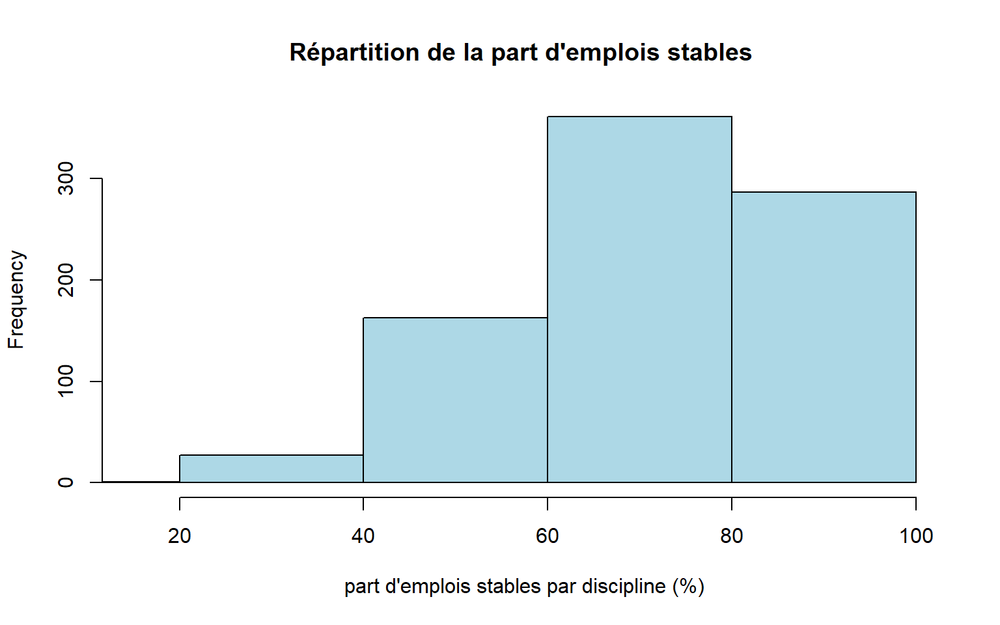
Distribution de la part d'emplois stables par discipline
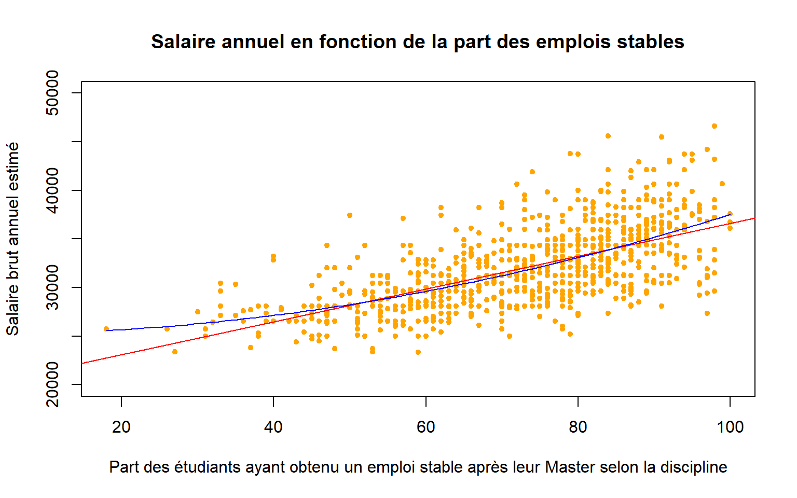
Salaire annuel estimé en fonction de la part d'emplois stables (régression linéaire vs lissage local)
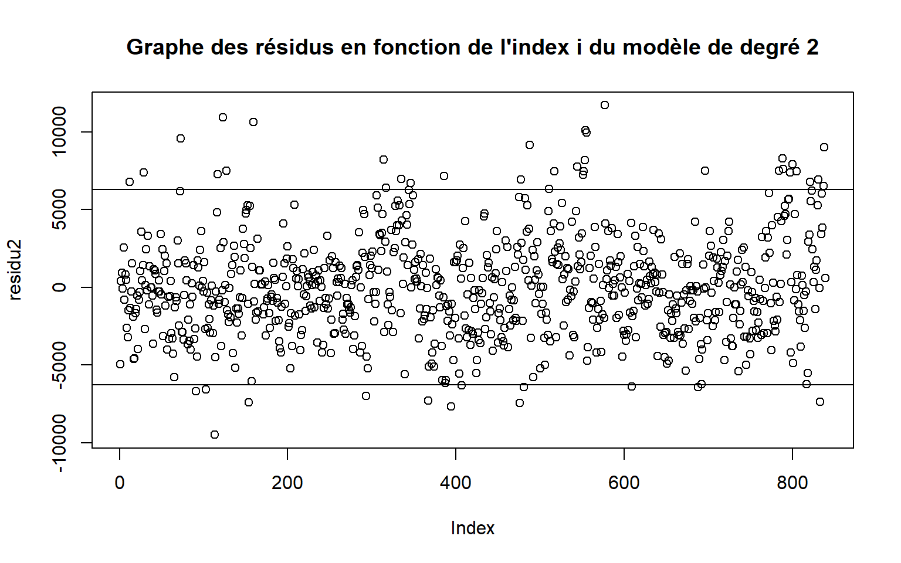
Graphe des résidus du modèle polynomial de degré 2 — vérification de l'homoscédasticité
Analyse de données, reporting et datavisualisation
Détails
Projet client réel pour Bricolib, plateforme de location d'outils entre particuliers : tableau de bord Power BI analysant les déséquilibres géographiques entre l'offre et la demande sur tout le territoire français.
TraiterAnalyserValoriserPower BI
Présentation générale
Ce projet consistait à répondre à une commande d'un client réel, Bricolib, plateforme de location d'outils entre particuliers, qui cherchait à identifier les zones où l'offre d'outils était insuffisante ou excédentaire par rapport à la demande, afin d'orienter sa stratégie d'acquisition d'outils et de communication ciblée.
Par équipe de 6, nous avons été confrontés à des situations concrètes de traitement, d'analyse et de valorisation de données à grande échelle (plus de 150 000 lignes réparties sur quatre fichiers : annonces, recherches, transactions et comptes utilisateurs).
Nous avons suivi différentes étapes afin de cadrer le besoin client via une carte d'empathie, nettoyer et structurer les données sous Excel puis Access, et construire un tableau de bord décisionnel sous Power BI intégrant cartes géographiques, indicateurs clés et filtres dynamiques. La restitution s'est faite auprès du client, accompagnée d'une notice utilisateur et d'un poster de synthèse.
Présentation individuelle
Sur une équipe de 6 personnes, j'ai occupé le rôle de responsable tests, avec une implication forte dans la réalisation du tableau de bord compte tenu de mes compétences sur cet outil.
Tâches principales
Participation au nettoyage des données (doublons, valeurs aberrantes, correction des noms de ville et d'outils)
Construction de visualisations sous Power BI (carte géographique, indicateurs, filtres dynamiques)
Tests et vérifications du tableau de bord avant restitution au client
Tâches secondaires
Contribution à la note de cadrage et au diagramme de Gantt
Rédaction de ma partie de projet pour le rapport final
Compétence ciblée — Traiter, analyser et valoriser des données dans un contexte client
Ce projet m'a permis de développer mes compétences sur l'ensemble de la chaîne décisionnelle, du traitement de la donnée brute jusqu'à sa restitution opérationnelle.
J'ai appris à reformuler un besoin client flou en problématique actionnable.
Nettoyer et fiabiliser des données réelles à grande échelle, en corrigeant les erreurs de saisie impactant la qualité de la géolocalisation.
Construire un tableau de bord décisionnel multi-niveaux, pensé pour un usage stratégique par un non-spécialiste de la donnée.
Travailler en mode projet avec un client réel, dans le respect d'un cahier des charges et d'une démarche qualité.
Cette expérience m'a également permis d'approfondir mes connaissances sur les outils de reporting et d'ETL (Power Query, Power BI).
Apprentissage et bénéfices
Suite à ce projet, j'ai renforcé mes compétences dans :
L'interdisciplinarité entre statistique et informatique décisionnelle au sein d'un même projet.
La conduite de projet et la planification en équipe.
La prise de conscience des problématiques de confidentialité des données.
Apprentissage critique associé :
AC11.01 : Correctement interpréter et prendre en compte le besoin du commanditaire ou du client
AC11.04 : Mesurer l'importance de maîtriser la structure des données à exploiter
AC12.02 : Comprendre qu'une analyse correcte ne peut émaner que de données propres et préparées
AC13.03 : Mesurer l'importance de mettre en évidence des résultats clés par l'utilisation d'indicateurs pertinents
AC13.05 : Comprendre les intérêts de la data visualisation et de l'infographie
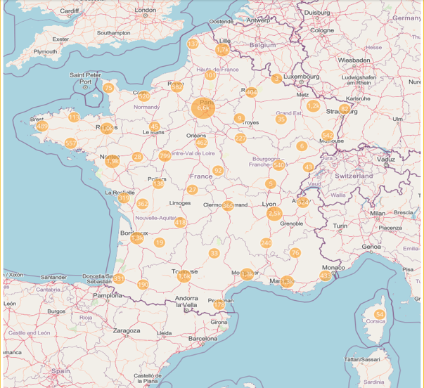
Carte de France — répartition géographique des annonces d'outils par ville
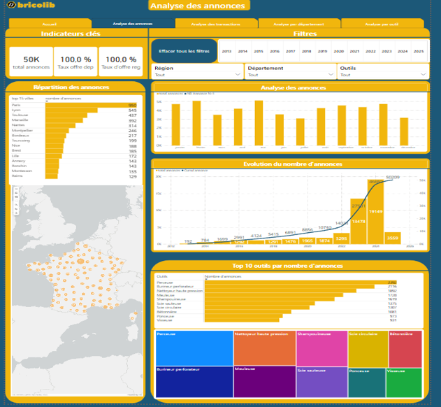
Tableau de bord Power BI — onglet "Analyse des annonces" : indicateurs, filtres et top outils
Expliquer ou prédire une variable quantitative à partir de plusieurs facteurs
Détails
Prédiction du prix médian des logements à Boston : analyse univariée et bivariée, construction de modèles de régression linéaire multiple, sélection par méthodes forward/backward/stepwise/exhaustive, évaluation par RMSE.
ModéliserAnalyserRégression multipleR
Présentation générale
Pour ce projet, il nous était demandé de choisir un sujet d'étude mettant en œuvre la modélisation linéaire multivariée en groupe de 4 personnes. Notre groupe a choisi de travailler sur le jeu de données Boston Housing, qui décrit 506 zones urbaines de Boston à travers des caractéristiques socio-économiques, environnementales et structurelles, dans le but d'expliquer puis de prédire le prix médian des logements.
Nous avons été confrontés à des situations concrètes de préparation de données réelles, avec un travail de nettoyage des valeurs censurées, avant de mener une démarche de construction progressive de modèles de régression linéaire multiple, de la version la plus simple à la plus complète.
Nous avons ensuite procédé à une sélection de variables en comparant systématiquement quatre méthodes (forward, backward, stepwise, exhaustive), puis à la validation du modèle final retenu par l'étude des résidus et la significativité des coefficients, avant de traduire ce modèle en application décisionnelle.
Présentation individuelle
Durant ce projet, j'ai pris en charge plusieurs tâches essentielles :
Tâches principales
Analyse exploratoire de la variable cible (prix médian) après retrait des valeurs censurées
Participation à la comparaison des méthodes de sélection de variables (forward, backward, stepwise, exhaustive)
Validation du modèle final par vérification de l'homoscédasticité des résidus (test de Breusch-Pagan)
Tâches secondaires
Construction des profils-types de quartiers et calcul des intervalles de confiance et de prédiction
Rédaction de ma partie de projet pour le rapport final
Compétence ciblée — Modéliser les données dans un cadre statistique
Ce projet m'a permis de développer mes compétences en modélisation linéaire multivariée sur des données réelles.
J'ai appris à traiter les valeurs censurées avant modélisation, pour ne pas biaiser les coefficients de régression.
Comparer rigoureusement plusieurs méthodes de sélection de modèle plutôt que de se fier à une seule approche, avec un critère de décision explicite (RMSE).
Valider les hypothèses du modèle linéaire, notamment l'homoscédasticité des résidus.
Traduire un modèle statistique en outil de décision, en distinguant intervalles de confiance et de prédiction.
Cette expérience m'a également permis d'approfondir mes connaissances sur les conditions d'application et les limites de validité d'un modèle de régression.
Apprentissage et bénéfices
Suite à ce projet, j'ai renforcé mes compétences dans :
La préparation des données en vue d'une modélisation statistique fiable.
La confrontation d'une hypothèse à la réalité pour prendre une décision (tests statistiques).
La rigueur de communication autour des résultats d'un modèle statistique.
Apprentissage critique associé :
AC22.01 : Prendre conscience de la différence entre modélisation statistique et analyse exploratoire
AC22.04 : Appréhender l'idée de confronter une hypothèse avec la réalité pour prendre une décision
AC22.05 : Apprécier les limites de validité et les conditions d'application d'une analyse
AC23.02 : Savoir défendre ses choix d'analyses
AC23.04 : Prendre conscience de la rigueur requise dans ses productions et dans la communication à leur propos
AC24.03EMS : Comprendre l'impact du type de données sur le choix de la modélisation à mettre en œuvre
AC24.04EMS : Apprécier les limites de validité et les conditions d'application d'un modèle
AC24.05EMS : Réaliser l'importance de la mise en œuvre d'une procédure de test statistique pour valider ou non une hypothèse
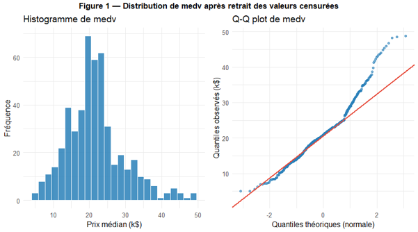
Distribution du prix médian (medv) après retrait des valeurs censurées — histogramme et Q-Q plot
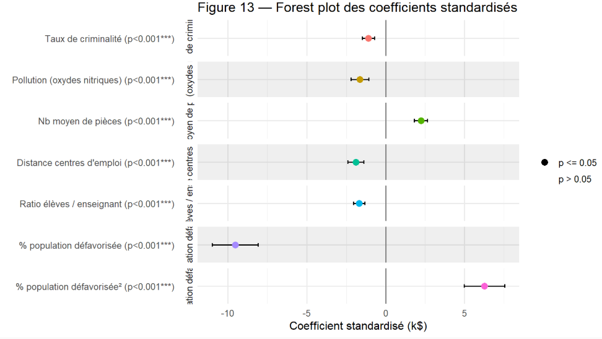
Forest plot des coefficients standardisés du modèle final retenu (7 variables, toutes p<0.001)
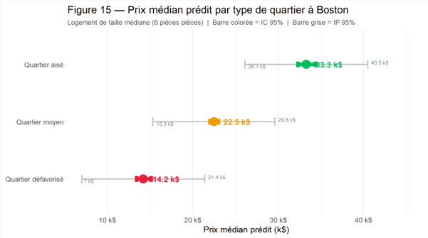
Prix médian prédit par type de quartier — intervalles de confiance et de prédiction à 95%
Analyse en Composantes Principales (ACP) sur la satisfaction des passagers aériens. Application R Shiny interactive permettant d'explorer les résultats : graphes des individus et des variables, cercle des corrélations, choix du nombre d'axes, interprétation des composantes.
ModéliserValoriserACPR Shiny
Présentation générale
Pour ce projet, il nous était proposé de choisir un sujet parmi six afin de réaliser une analyse en composantes principales (ACP) et d'en restituer les résultats au sein d'une application interactive. Nous avons choisi de travailler sur un jeu de données portant sur la satisfaction de plus de 120 000 passagers aériens, notant leur expérience de vol (confort, service à bord, WiFi, propreté, ponctualité...).
Nous avons été confrontés à des situations concrètes de préparation des données en amont de l'ACP, puis à la réalisation de l'analyse multivariée proprement dite, avec l'extraction des axes principaux et l'identification des variables contributives à chaque dimension.
Nous avons ensuite développé une application interactive sous R Shiny, et non un simple rapport statique, afin de restituer les résultats à un public métier capable d'explorer lui-même les axes et les profils de classes de voyage.
Présentation individuelle
Durant ce projet, j'ai pris en charge plusieurs tâches essentielles :
Tâches principales
Réalisation de l'ACP et extraction des axes principaux
Calcul des coordonnées moyennes par classe de voyage sur chaque axe
Développement de l'application R Shiny (interface multi-onglets, sélection de l'axe et des classes à comparer)
Tâches secondaires
Réalisation du graphique radar comparant le profil de notes moyennes par classe
Rédaction de ma partie de projet pour le rapport final
Compétence ciblée — Valoriser une analyse multivariée dans une application interactive
Ce projet m'a permis de développer mes compétences en analyse en composantes principales et restitution interactive.
J'ai appris à interpréter la composition d'un axe d'ACP, en identifiant les variables contributrices et leur poids relatif.
Construire une application interactive pour un public métier, au-delà du simple rapport statique.
Choisir la bonne visualisation selon le message à transmettre (barres horizontales pour une opposition, radar pour un profil multidimensionnel).
Synthétiser l'information portée par plusieurs variables à l'aide d'une analyse multivariée.
Cette expérience m'a également permis d'approfondir mes connaissances sur les méthodes factorielles et leur restitution à un public non spécialiste.
Apprentissage et bénéfices
Suite à ce projet, j'ai renforcé mes compétences dans :
La distinction entre modélisation statistique et analyse exploratoire.
La défense argumentée de mes choix d'analyses auprès d'un public métier.
La rigueur dans la production et la communication de résultats statistiques.
Apprentissage critique associé :
AC21.05 : Apprécier l'intérêt de briques logicielles existantes et savoir les utiliser
AC22.01 : Prendre conscience de la différence entre modélisation statistique et analyse exploratoire
AC22.03 : Comprendre l'intérêt des analyses multivariées pour synthétiser et résumer l'information portée par plusieurs variables
AC22.05 : Apprécier les limites de validité et les conditions d'application d'une analyse
AC23.02 : Savoir défendre ses choix d'analyses
AC23.03 : Saisir la nécessité de choisir des indicateurs pertinents pour communiquer sur les résultats
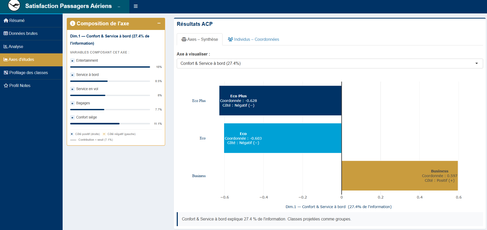
Application R Shiny — composition de l'axe 1 et projection des classes (Eco, Eco Plus, Business)
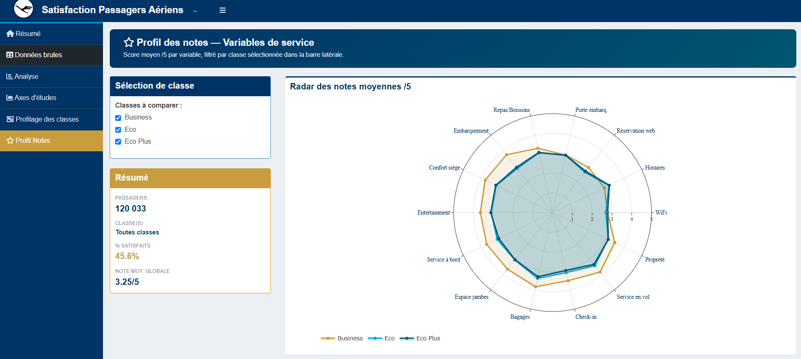
Profil des notes — radar comparatif des scores moyens /5 par classe de voyage